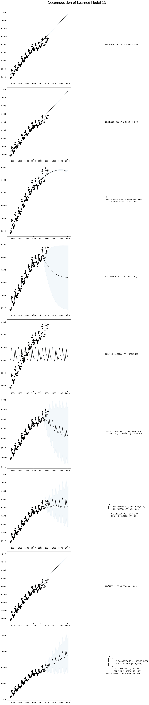

Time Series Decomposition
This tutorial shows how to decompose AutoGP models into their constituent temporal components, to gain more insight into the learned time series structures.
There are many ways to decompose covariance kernels. We will demonstrate three methods:
AutoGP.decompose. This function breaks down a composite kernel into the constituent subkernels in the expression tree.
AutoGP.extract_kernel. This function extracts a specific primitive kernel from a composite kernel, while discarding the others.AutoGP.split_kernel_sop. This function splits a kernel into a pair of kernels through a sum-of-products interpretation.
import AutoGPusing CSV
using Dates
using DataFrames
using Printf
using PythonPlot
using StatisticsAutoGP.seed!(10)data = CSV.File("assets/M1266.csv")
M3 = DataFrame(data);
df = M3[:,["ds","y"]];We next split the data into a training set and test set.
n_test = 18
n_train = DataFrames.nrow(df) - n_test
df_train = df[1:end-n_test, :]
df_test = df[end-n_test+1:end, :]
fig, ax = PythonPlot.subplots(figsize=(10,4))
ax.scatter(df_train.ds, df_train.y, marker="o", color="k", alpha=.5)
ax.scatter(df_test.ds, df_test.y, marker="o", color="w", edgecolor="k", label="Test Data")
Python: <matplotlib.collections.PathCollection object at 0x7ddc363cdb80>model = AutoGP.GPModel(df_train.ds, df_train.y; n_particles=18);ds_future = range(start=df.ds[end]+Dates.Month(1), step=Dates.Month(1), length=4*size(df_test)[1])
ds_query = vcat(df_train.ds, df_test.ds, ds_future)
forecasts = AutoGP.predict(model, ds_query; quantiles=[0.025, 0.975]);AutoGP.fit_smc!(model; schedule=vcat(collect(range(2, n_train, step=12)), n_train), n_mcmc=100, n_hmc=20, verbose=false);forecasts = AutoGP.predict(model, ds_query; quantiles=[0.025, 0.975]);fig, ax = PythonPlot.subplots(figsize=(10,4))
for i=1:AutoGP.num_particles(model)
subdf = forecasts[forecasts.particle.==i,:]
ax.plot(subdf[!,"ds"], subdf[!,"y_mean"], color="k", linewidth=.5)
ax.fill_between(
subdf.ds, subdf[!,"y_0.025"], subdf[!,"y_0.975"];
color="tab:blue", alpha=0.05)
end
ax.scatter(df_train.ds, df_train.y, marker="o", color="k", label="Observed Data")
ax.scatter(df_test.ds, df_test.y, marker="o", color="w", edgecolor="k", label="Test Data")
Python: <matplotlib.collections.PathCollection object at 0x7ddc35e42880>Hierarchical Decomposition of Kernels
Let us first inspect the learned kernels.
weights = AutoGP.particle_weights(model)
kernels = AutoGP.covariance_kernels(model)
for (i, (k, w)) in enumerate(zip(kernels, weights))
println("Model $(i), Weight $(w)")
display(k)
endModel 1, Weight 0.00901154857652315
×
├── +
│ ├── LIN(659981029.03; 97715.80, 0.00)
│ └── LIN(1195212711.94; 560685.09, 0.00)
└── +
├── +
│ ├── ×
│ │ ├── ×
│ │ │ ├── ×
│ │ │ │ ├── LIN(645756746.98; 0.12, 0.00)
│ │ │ │ └── LIN(456367123.42; 0.16, 0.00)
│ │ │ └── LIN(567802575.74; 0.04, 0.00)
│ │ └── GE(74314112.16, 1.31; 0.38)
│ └── PER(1.74, 31698075.82; 0.14)
└── LIN(435409162.25; 0.10, 0.00)
Model 2, Weight 0.019612029584188975
×
├── LIN(553528205.92; 193073.36, 0.00)
└── +
├── GE(610350376.93, 1.32; 0.44)
└── PER(1.48, 31339381.01; 0.17)
Model 3, Weight 0.017007994352312553
+
├── ×
│ ├── ×
│ │ ├── LIN(466187204.31; 254341.57, 0.00)
│ │ └── LIN(883086760.04; 0.22, 0.00)
│ └── +
│ ├── +
│ │ ├── ×
│ │ │ ├── GE(72266269.78, 1.63; 0.14)
│ │ │ └── LIN(444058228.24; 0.06, 0.00)
│ │ └── +
│ │ ├── LIN(724687893.47; 0.08, 0.00)
│ │ └── LIN(560627320.97; 0.75, 0.00)
│ └── PER(1.09, 31585406.18; 0.13)
└── LIN(558190191.81; 4095788.70, 0.00)
Model 4, Weight 0.11069109354255227
+
├── +
│ ├── GE(566952789.69, 1.66; 53807.36)
│ └── PER(1.86, 31493709.45; 126071.89)
└── LIN(506782708.52; 24208.61, 0.00)
Model 5, Weight 0.015355520708968496
+
├── ×
│ ├── ×
│ │ ├── LIN(703521266.93; 402680.15, 0.00)
│ │ └── LIN(474054605.17; 0.29, 0.00)
│ └── +
│ ├── ×
│ │ ├── LIN(477789221.18; 0.08, 0.00)
│ │ └── +
│ │ ├── GE(93852771.12, 0.56; 0.04)
│ │ └── LIN(445472740.93; 0.11, 0.00)
│ └── PER(1.43, 31593348.89; 0.18)
└── LIN(559007522.80; 27079.33, 0.00)
Model 6, Weight 0.02878043770753873
+
├── ×
│ ├── ×
│ │ ├── LIN(455085567.29; 199889.05, 0.00)
│ │ └── LIN(905419786.45; 0.23, 0.00)
│ └── +
│ ├── ×
│ │ ├── LIN(640199044.16; 0.06, 0.00)
│ │ └── GE(100589877.05, 1.25; 0.18)
│ └── PER(1.43, 31593348.89; 0.18)
└── LIN(593954212.76; 301975.24, 0.00)
Model 7, Weight 0.014477329933002096
+
├── ×
│ ├── +
│ │ ├── LIN(497587817.58; 639968.07, 0.00)
│ │ └── LIN(471057791.81; 1253031.98, 0.00)
│ └── +
│ ├── +
│ │ ├── ×
│ │ │ ├── ×
│ │ │ │ ├── ×
│ │ │ │ │ ├── LIN(458436935.16; 0.16, 0.00)
│ │ │ │ │ └── +
│ │ │ │ │ ├── LIN(610953981.25; 0.16, 0.00)
│ │ │ │ │ └── ×
│ │ │ │ │ ├── ×
│ │ │ │ │ │ ├── LIN(478408274.62; 0.04, 0.00)
│ │ │ │ │ │ └── +
│ │ │ │ │ │ ├── LIN(574886530.87; 0.32, 0.00)
│ │ │ │ │ │ └── LIN(460056017.66; 0.30, 0.00)
│ │ │ │ │ └── ×
│ │ │ │ │ ├── +
│ │ │ │ │ │ ├── +
│ │ │ │ │ │ │ ├── LIN(667199694.27; 0.39, 0.00)
│ │ │ │ │ │ │ └── ×
│ │ │ │ │ │ │ ├── GE(43654821.17, 1.55; 0.30)
│ │ │ │ │ │ │ └── +
│ │ │ │ │ │ │ ├── LIN(559025780.12; 0.03, 0.00)
│ │ │ │ │ │ │ └── ×
│ │ │ │ │ │ │ ├── +
│ │ │ │ │ │ │ │ ├── PER(0.14, 80045439.57; 0.18)
│ │ │ │ │ │ │ │ └── +
│ │ │ │ │ │ │ │ ├── +
│ │ │ │ │ │ │ │ │ ├── LIN(539688999.60; 0.20, 0.00)
│ │ │ │ │ │ │ │ │ └── PER(0.19, 19029757.25; 0.04)
│ │ │ │ │ │ │ │ └── ×
│ │ │ │ │ │ │ │ ├── ×
│ │ │ │ │ │ │ │ │ ├── PER(0.12, 77479085.99; 0.07)
│ │ │ │ │ │ │ │ │ └── PER(0.18, 144355664.13; 0.01)
│ │ │ │ │ │ │ │ └── GE(44444499.68, 0.71; 0.35)
│ │ │ │ │ │ │ └── GE(27066775.64, 1.55; 0.13)
│ │ │ │ │ │ └── GE(25937540.58, 1.13; 0.03)
│ │ │ │ │ └── PER(0.29, 30436188.75; 0.13)
│ │ │ │ └── GE(360706174.03, 1.63; 0.04)
│ │ │ └── GE(54699037.16, 1.18; 0.23)
│ │ └── PER(2.03, 31575590.50; 0.15)
│ └── LIN(578615206.91; 0.97, 0.00)
└── LIN(450947315.34; 756380.09, 0.00)
Model 8, Weight 0.047447926279920595
+
├── +
│ ├── GE(490829705.72, 1.61; 53891.92)
│ └── PER(1.86, 31474242.59; 140799.04)
└── +
├── +
│ ├── LIN(719928809.88; 140065.50, 0.00)
│ └── LIN(450286397.01; 73853.58, 0.00)
└── LIN(425778979.01; 283629.75, 0.00)
Model 9, Weight 0.010109195479711725
×
├── LIN(510605573.28; 538468.10, 0.00)
└── +
├── ×
│ ├── +
│ │ ├── ×
│ │ │ ├── ×
│ │ │ │ ├── GE(73592603.05, 1.32; 0.30)
│ │ │ │ └── GE(435853766.92, 0.97; 0.18)
│ │ │ └── LIN(578736277.07; 0.10, 0.00)
│ │ └── LIN(485369591.57; 0.50, 0.00)
│ └── LIN(571286497.84; 0.34, 0.00)
└── +
├── LIN(472756425.93; 0.15, 0.00)
└── PER(1.29, 31481465.66; 0.16)
Model 10, Weight 0.00019137991483466764
×
├── LIN(568090873.20; 139939.21, 0.00)
└── +
├── ×
│ ├── GE(817646585.97, 1.40; 0.50)
│ └── +
│ ├── LIN(444799222.44; 0.03, 0.00)
│ └── LIN(450268972.65; 0.28, 0.00)
└── PER(1.24, 31953635.36; 0.17)
Model 11, Weight 0.0054314969855522
+
├── ×
│ ├── ×
│ │ ├── LIN(568363450.73; 442906.88, 0.00)
│ │ └── LIN(478193065.57; 0.35, 0.00)
│ └── +
│ ├── GE(129762049.27, 1.64; 0.07)
│ └── PER(1.42, 31677669.77; 0.25)
└── LIN(479392279.90; 35663.69, 0.00)
Model 12, Weight 0.0076299623510348
+
├── ×
│ ├── LIN(794821416.44; 95231.27, 0.00)
│ └── +
│ ├── GE(212766080.39, 1.53; 0.08)
│ └── PER(1.28, 31642882.88; 0.21)
└── ×
├── LIN(1501215005.41; 111622.20, 0.00)
└── LIN(551494152.52; 0.15, 0.00)
Model 13, Weight 0.3270158643889261
+
├── +
│ ├── GE(308405091.32, 1.55; 46032.60)
│ └── PER(1.86, 31474242.59; 140799.04)
└── LIN(478990944.11; 87109.72, 0.00)
Model 14, Weight 0.08141232858111867
+
├── ×
│ ├── LIN(468516482.12; 1517671.74, 0.00)
│ └── +
│ ├── ×
│ │ ├── ×
│ │ │ ├── ×
│ │ │ │ ├── LIN(458383824.50; 0.08, 0.00)
│ │ │ │ └── LIN(490260027.05; 0.05, 0.00)
│ │ │ └── GE(490829705.72, 1.61; 0.05)
│ │ └── GE(67306478.43, 1.19; 0.35)
│ └── PER(1.86, 31474242.59; 0.14)
└── LIN(611309629.23; 173952.01, 0.00)
Model 15, Weight 0.0005021571370656624
+
├── +
│ ├── ×
│ │ ├── LIN(609809419.35; 610124.73, 0.00)
│ │ └── +
│ │ ├── +
│ │ │ ├── ×
│ │ │ │ ├── ×
│ │ │ │ │ ├── GE(78117685.74, 1.58; 0.04)
│ │ │ │ │ └── LIN(617136973.20; 0.35, 0.00)
│ │ │ │ └── LIN(556041942.24; 0.27, 0.00)
│ │ │ └── LIN(1202344796.78; 0.20, 0.00)
│ │ └── PER(1.91, 31684257.18; 0.22)
│ └── LIN(424034379.19; 103118.46, 0.00)
└── LIN(468608844.61; 212589.52, 0.00)
Model 16, Weight 0.2575040599217603
+
├── +
│ ├── GE(490829705.72, 1.61; 53891.92)
│ └── PER(1.86, 31474242.59; 140799.04)
└── LIN(527880879.77; 307350.63, 0.00)
Model 17, Weight 0.027518336753961727
×
├── LIN(468175029.06; 113767.87, 0.00)
└── +
├── +
│ ├── LIN(525326031.11; 0.19, 0.00)
│ └── GE(320816202.09, 1.73; 0.99)
└── +
├── LIN(556245068.01; 0.17, 0.00)
└── PER(1.40, 31519222.30; 0.21)
Model 18, Weight 0.020301337801024034
+
├── GE(361385655.65, 1.74; 365081.64)
└── PER(1.30, 31583405.26; 131132.44)We now use AutoGP.decompose to hierarchically break down the composite kernel into all the constituent subkernels.
decomposed_models = AutoGP.decompose(model);# Helper function to pretty print covariance.
function show_string(x)
io = IOBuffer()
Base.show(io, MIME("text/plain"), x)
return String(take!(io))
end
# Plot the decomposition of `model` into its constituent parts.
function plot_decomposition(model::AutoGP.GPModel)
kernels = AutoGP.covariance_kernels(model)
forecasts = AutoGP.predict(
model, ds_query;
quantiles=[0.025, 0.975]);
fig, axes = PythonPlot.subplots(
nrows=AutoGP.num_particles(model),
ncols=2,
tight_layout=true,
figsize=(12, 6*AutoGP.num_particles(model)),
)
for i=1:AutoGP.num_particles(model)
subdf = forecasts[forecasts.particle.==i,:]
# axes[i].set_title(show_string(kernels[i]), ha="left")
axes[i-1,0].plot(subdf[!,"ds"], subdf[!,"y_mean"], color="k", linewidth=1, label=show_string(kernels[i]))
axes[i-1,0].fill_between(
subdf.ds, subdf[!,"y_0.025"], subdf[!,"y_0.975"];
color="tab:blue", alpha=0.05)
axes[i-1,0].scatter(df_train.ds, df_train.y, marker="o", color="k", label="Observed Data")
axes[i-1,0].scatter(df_test.ds, df_test.y, marker="o", color="w", edgecolor="k", label="Test Data")
axes[i-1,1].text(0.5, 0.5, show_string(kernels[i]), transform=axes[i-1,1].transAxes, va="center", ha="left")
axes[i-1,1].set_axis_off()
end
return fig, axes
endplot_decomposition (generic function with 1 method)Let us plot the decomposition of a given particle in the ensemble.
idx = 13
fig, ax = plot_decomposition(decomposed_models[11]);
fig.suptitle("Decomposition of Learned Model $(idx)", fontsize=18, va="center", y=1);
STL Style Decomposition
An alternative approach to decomposing kernels is using AutoGP.extract_kernel, which retains only a specific primitive kernel while discarding the others. In the following example, we will extract the AutoGP.GP.Linear, AutoGP.GP.Periodic, and AutoGP.GP.GammaExponential kernels from each learned particle to produce an "STL" style decomposition.
model_per = AutoGP.extract_kernel(model, AutoGP.GP.Periodic);
model_ge = AutoGP.extract_kernel(model, AutoGP.GP.GammaExponential);
model_lin = AutoGP.extract_kernel(model, AutoGP.GP.Linear);Let us study the original and decomposed kernels for a given particle.
Unlike a traditional time series decomposition, which typically assumes a fixed additive or multiplicative structure, these decompositions retain the learned structure. For example, the decomposition for Linear may have a quadratic term, if the overall kernel has a subexpression of the form LIN * LIN.
The kernel structure is retained by using the AutoGP.GP.Constant to act as a "noop", as shown below. See also AutoGP.extract_kernel for full details.
idx = 2
println("Model $(idx) - FULL"); display(AutoGP.covariance_kernels(model)[2])
println("Model $(idx) - LIN only"); display(AutoGP.covariance_kernels(model_lin)[2])
println("Model $(idx) - PER only"); display(AutoGP.covariance_kernels(model_per)[2])
println("Model $(idx) - GE only"); display(AutoGP.covariance_kernels(model_ge)[2])Model 2 - FULL
×
├── LIN(553528205.92; 193073.36, 0.00)
└── +
├── GE(610350376.93, 1.32; 0.44)
└── PER(1.48, 31339381.01; 0.17)
Model 2 - LIN only
×
├── LIN(553528205.92; 193073.36, 0.00)
└── +
├── CONST(0.00)
└── CONST(0.00)
Model 2 - PER only
×
├── CONST(985751.12)
└── +
├── CONST(0.00)
└── PER(1.48, 31339381.01; 0.17)
Model 2 - GE only
×
├── CONST(985751.12)
└── +
├── GE(610350376.93, 1.32; 0.44)
└── CONST(0.00)We can now obtain forecasts corresponding to the Linear, Periodic, and GammaExponential components in each particle.
forecasts_lin = AutoGP.predict(model_lin, ds_query .+ Day(1); quantiles=[0.025, 0.975]);
forecasts_per = AutoGP.predict(model_per, ds_query .+ Day(1); quantiles=[0.025, 0.975]);
forecasts_ge = AutoGP.predict(model_ge, ds_query .+ Day(1); quantiles=[0.025, 0.975]);fig, axes = PythonPlot.subplots(figsize=(10,14), nrows=3, tight_layout=true)
for (ax, m, f) in zip(axes, [model_lin, model_per, model_ge], [forecasts_lin, forecasts_per, forecasts_ge])
for i=1:AutoGP.num_particles(m)
subdf = f[f.particle.==i,:]
ax.plot(subdf[!,"ds"], subdf[!,"y_mean"], color="k", linewidth=.5)
ax.fill_between(subdf.ds, subdf[!,"y_0.025"], subdf[!,"y_0.975"]; color="tab:blue", alpha=0.05)
end
ax.scatter(df_train.ds, df_train.y, marker="o", color="k", label="Observed Data")
ax.scatter(df_test.ds, df_test.y, marker="o", color="w", edgecolor="k", label="Test Data")
end
axes[0].set_title("STRUCTURE: LIN")
axes[1].set_title("STRUCTURE: PER")
axes[2].set_title("STRUCTURE: GE");
Sum-of-Products Decomposition
An third approach to decomposing kernels is using AutoGP.split_kernel_sop, which is based on a sum-of-products decomposition of kernels.
In particular, we can write any composite covariance kernel $k$ as a sum of $m$ products, where the $i$th term in the sum is a product of $n_i$ terms:
\[k = k_{11}k_{12}\cdots k_{1n_1} + k_{21}k_{22}\cdots k_{2n_2} + \dots + k_{m1}k_{m2}\cdots k_{m n_m}.\]
For a given primitive base kernel, such as Periodic, we can rewrite the above expression as
\[k = k^{\rm PER} + k^{\rm NOPER},\]
where $k^{\rm PER}$ contains all addends with a Periodic factor, and $k^{\rm NOPER}$ are the addends without a Periodic factor.
See AutoGP.GP.split_kernel_sop for additional details.
The following function returns a pair of AutoGP.GPModel instances based on this decomposition.
model_a, model_b = AutoGP.split_kernel_sop(model, AutoGP.GP.Periodic);Here is an example of the decomposition on the 4th particle of model.
idx = 4
println("Model $(idx) - ALL"); display(AutoGP.covariance_kernels(model)[idx])
println("Model $(idx) - PER"); display(AutoGP.covariance_kernels(model_a)[idx])
println("Model $(idx) - NO PER"); display(AutoGP.covariance_kernels(model_b)[idx])Model 4 - ALL
+
├── +
│ ├── GE(566952789.69, 1.66; 53807.36)
│ └── PER(1.86, 31493709.45; 126071.89)
└── LIN(506782708.52; 24208.61, 0.00)
Model 4 - PER
PER(1.86, 31493709.45; 126071.89)
Model 4 - NO PER
+
├── GE(566952789.69, 1.66; 53807.36)
└── LIN(506782708.52; 24208.61, 0.00)We can obtain predictions from the sum-of-products using AutoGP.GP.predict_sum.
forecasts_sum = AutoGP.predict_sum(model, ds_query, AutoGP.GP.Periodic; quantiles=[0.025, 0.975]);title = ["ALL", "PER", "NOPER"]
nrows = AutoGP.num_particles(model)
fig, axes = PythonPlot.subplots(ncols=3, nrows=nrows, figsize=(26,5*nrows))
for particle=1:AutoGP.num_particles(model)
f = forecasts_sum[forecasts_sum.particle .== particle,:]
for (component, ax) in zip([0,2,1], axes[particle-1])
subdf = f[f.component .== component,:]
ax.plot(subdf[!,"ds"], subdf[!,"y_mean"], color="k", linewidth=1)
ax.fill_between(subdf.ds, subdf[!,"y_0.025"], subdf[!,"y_0.975"]; color="tab:blue", alpha=0.5)
if component in [0,2]
ax.scatter(df_train.ds, df_train.y, marker="o", color="k", label="Observed Data")
ax.scatter(df_test.ds, df_test.y, marker="o", color="w", edgecolor="k", label="Test Data")
ax.set_ylim([5000, 7500])
end
w = @sprintf("%1.2f", maximum(subdf.weight))
ax.set_title("Particle $(particle) - Component $(title[component+1]) - Weight $(w)")
end
end
fig.savefig("forecasts-joint.png", dpi=150);
Using AutoGP.GP.predict_mvn_sum gives the overall mixture of Gaussians.
ds_probe = vcat(df_train.ds, df_test.ds)
mvn, indexes = AutoGP.predict_mvn_sum(model, ds_probe, AutoGP.GP.Periodic);
overall_predictions = mean(mvn.components[1])[indexes.Y]
seasonal_predictions = mean(mvn.components[1])[indexes.F[1]]
nonseasonal_predictions = mean(mvn.components[1])[indexes.F[2]]
fig, ax = PythonPlot.subplots(figsize=(18,6), ncols=2)
ax[0].plot(ds_probe, nonseasonal_predictions, marker=".", color="k")
ax[0].plot(ds_probe, nonseasonal_predictions .+ seasonal_predictions , marker=".", color="k")
ax[0].scatter(df_train.ds, df_train.y, marker=".")
ax[0].scatter(df_test.ds, df_test.y, marker="o", edgecolor="k", facecolor="w");
ax[1].plot(ds_probe, seasonal_predictions, marker=".", color="k")
Python: [<matplotlib.lines.Line2D object at 0x7ddb977b57c0>]